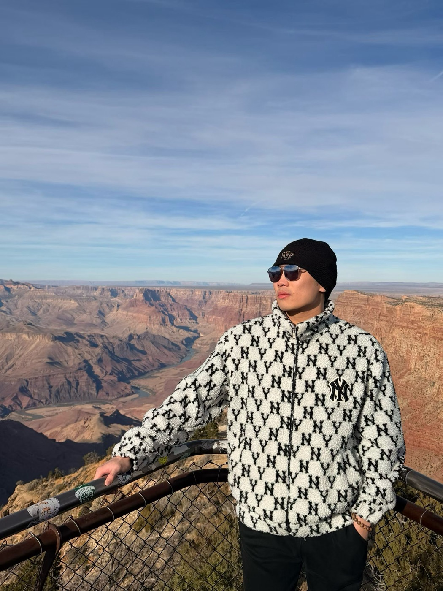

Basketball
Since 2022, I have played with the Wake Forest Chinese Men's Basketball Team. The court is where I reset, compete, and learn how much communication matters when the game gets fast.
Beyond research
Outside the lab, I am part of the Wake Forest Chinese Men's Basketball Team and the Sports Department of the Wake Forest Chinese Students and Scholars Association. Basketball gives me the same things good research does: disciplined practice, quick feedback, teamwork, and a little fearlessness.

Since 2022, I have played with the Wake Forest Chinese Men's Basketball Team. The court is where I reset, compete, and learn how much communication matters when the game gets fast.
Through the WFU Chinese Students and Scholars Association Sports Department, I help strengthen community through athletics and shared events.
I like places that make scale visible: canyons, cities, campuses, and courts. They remind me that technical work gets better when it stays connected to a larger world.
“The same mindset carries from research to basketball: read the situation, make the next good decision, and keep moving.”